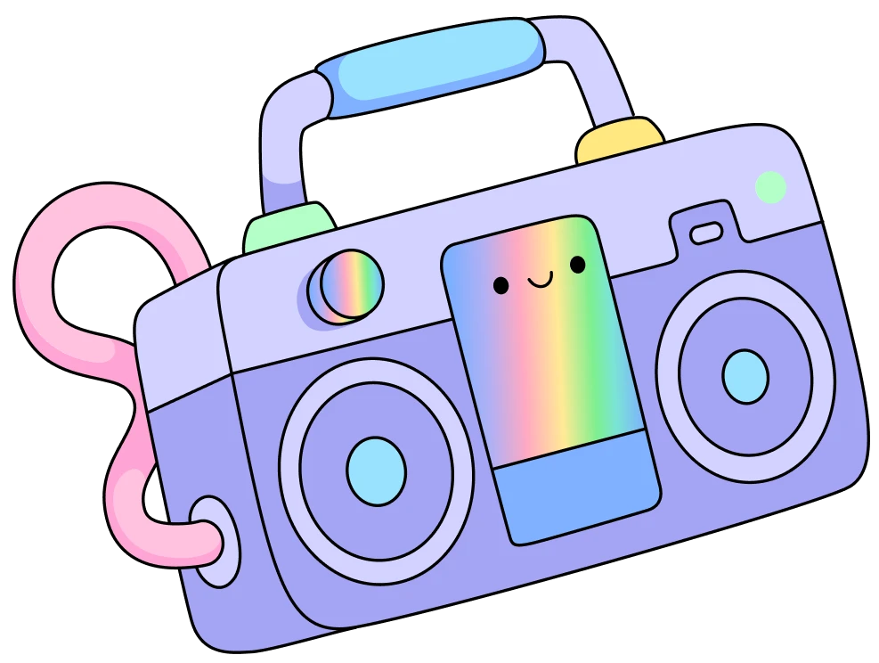

𝐂𝐥𝐢𝐪𝐮𝐞 𝐞𝐦 𝐮𝐦 𝐝𝐨𝐬 𝐛𝐨𝐭õ𝐞𝐬 𝐩𝐚𝐫𝐚 𝐯𝐢𝐳𝐮𝐚𝐥𝐢𝐳𝐚𝐫 𝐨𝐬 𝐨𝐮𝐭𝐫𝐨𝐬 𝐩𝐫𝐨𝐣𝐞𝐭𝐨𝐬:
Desafio Bloco de Cores
Hortifrutti
Serviços de Rede
Comandos Java
Desenhos Vetoriais
Projeto Sesi
Formulário Prime Video
Barbie🎀
Join to Sesi-Sp!
Cavaleiro dos Zodíaco
